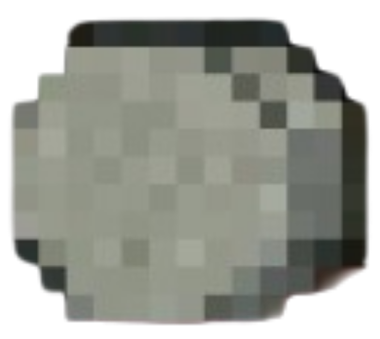
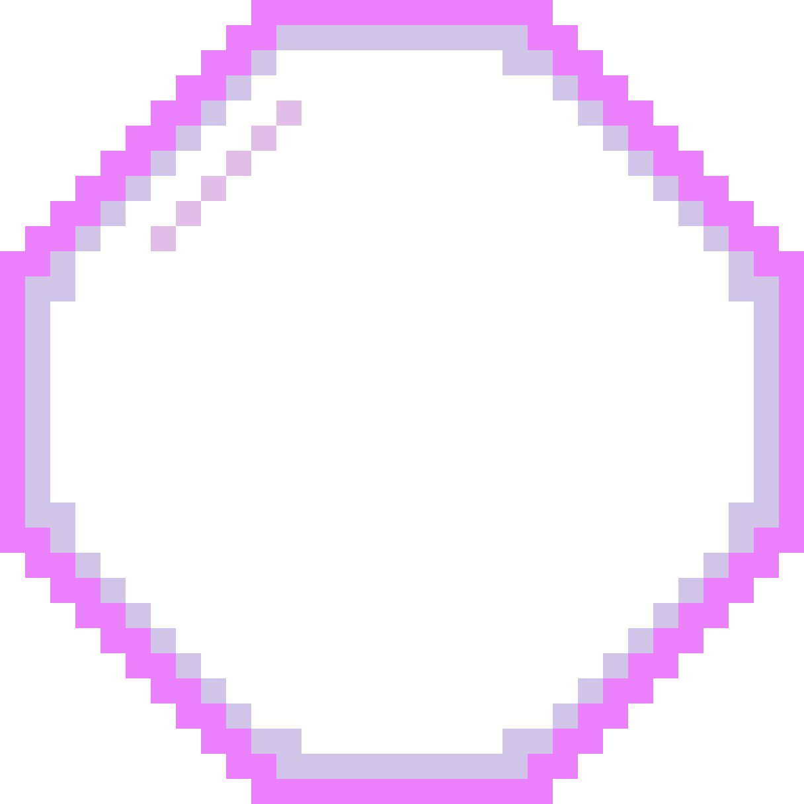

Attacken:
Hauptattacke: Steinschuss

Schießt einen schweren Stein mit viel Schaden

Spezialattacke: Splitterfeld

Erzeugt ein Magisches Feld. Fliegt sein Steinschuss durch das Feld, zersplittert er am Ende in 6 Stücke

Mega-Spezialattacke: Mega-Splitterfeld

Erzeugt ein Magisches Feld, das ihn verfolgt. Fliegt sein Steinschuss durch das Feld, zersplittert er am Ende in 6 Stücke
Kristallattacke: Splitterbeschwörung
Splitter tauchen zufällig in der Nähe des Gegners auf